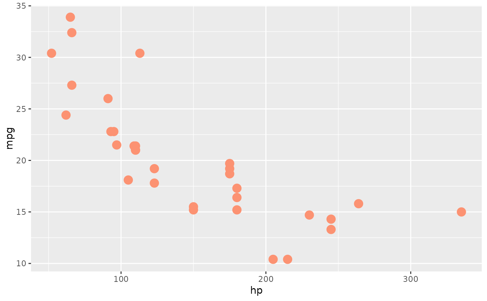
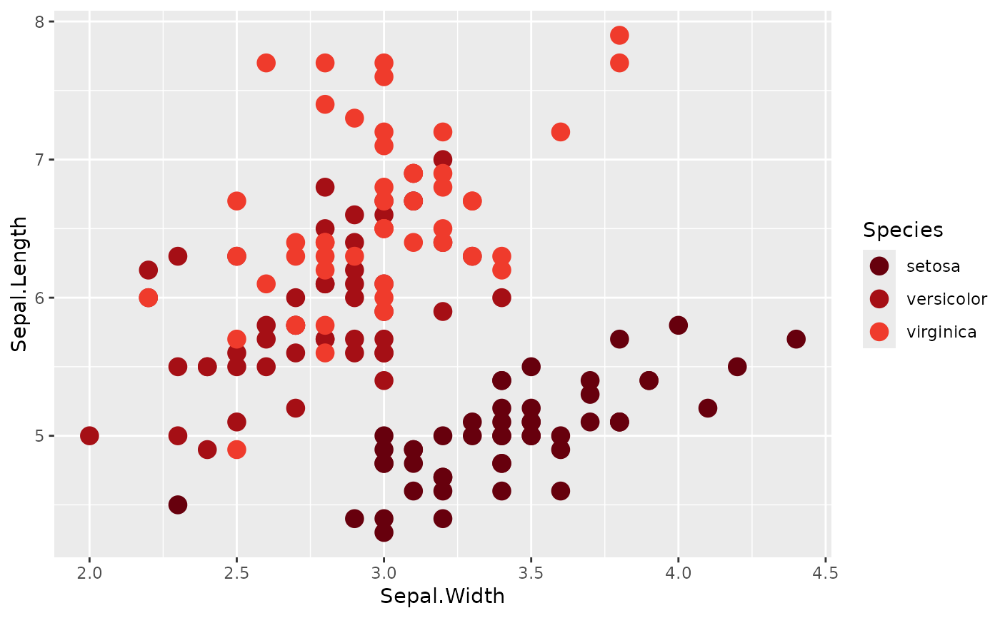
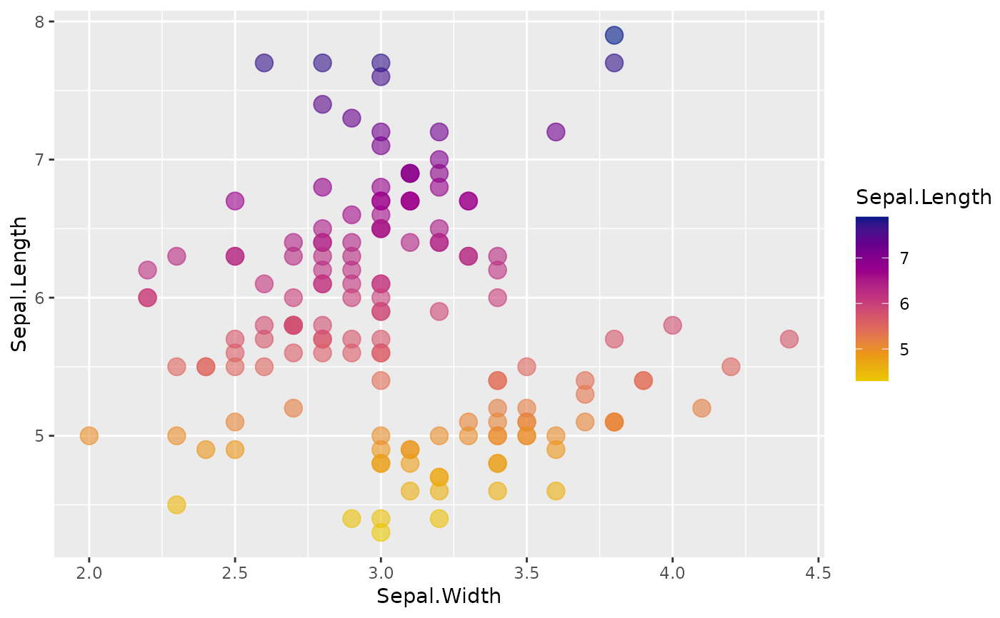
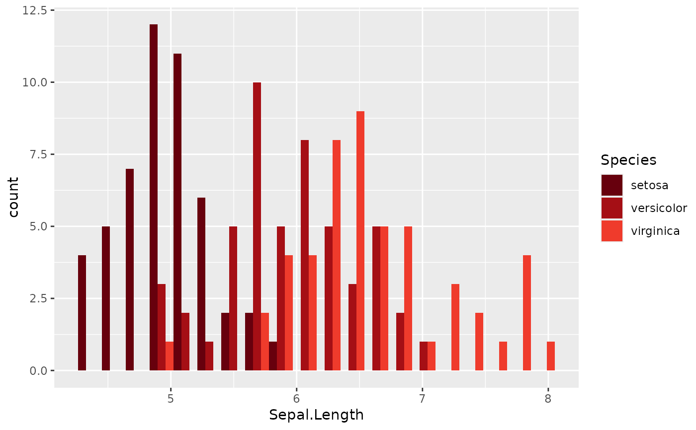

gnomeR colors can be accessed and used in plotting
Usage
gnomer_palette(
name = "pancan",
n,
type = c("discrete", "continuous"),
plot_col = FALSE,
reverse = FALSE,
...
)Arguments
- name
Name of desired palette, supplied in quotes. Choices are: "pancan" (default) (best for discrete), "main" (better for discrete), "sunset" (continuous)
- n
Number of colors desired. If omitted, uses all colors, or the needed number of colors if less than the total.
- type
Either "continuous" or "discrete". Use continuous if you want to automatically interpolate between colours.
- plot_col
Boolean value weather to plot the palette labeled with their hex codes. Defalut is FALSE.
- reverse
Boolean indicating whether the palette should be reversed. Default is FALSE.
- ...
Additional parameters to pass too
grDevices::colorRampPalette@importFrom graphics rgb rect par image text @importFrom grDevices colorRampPalette
Examples
library(ggplot2)
# Print a plot showing the colors in a palette, in order
gnomer_palette("pancan")
#> [1] "#67000D" "#A50F15" "#EF3B2C" "#FC9272" "#FEE0D2" "#BCBDDC" "#807DBA"
#> [8] "#54278F" "#3F007D" "#08306B" "#08519C" "#4292C6" "#9ECAE1" "#000000"
#> [15] "#525252" "#969696" "#BDBDBD" "#D9D9D9" "#80CDC1" "#35978F" "#01665E"
#> [22] "#006D2C" "#41AB5D" "#A1D99B" "#FFFFCC" "#FED976" "#FD8D3C" "#8C510A"
#> [29] "#BF812D" "#DFC27D" "#FA9FB5" "#F768A1" "#DD3497"
# use a single brand color from a palette
# here using the fourth color from the "pancan" palette
ggplot(mtcars, aes(hp, mpg)) +
geom_point(size = 4, color = gnomer_palette("pancan")[4])

# use a discrete color scale - uses fixed colors from the requested palette
ggplot(iris, aes(Sepal.Width, Sepal.Length, color = Species)) +
geom_point(size = 4) +
scale_color_manual(values = gnomer_palette("pancan"))

# use a continuous color scale - interpolates between colors
ggplot(iris, aes(Sepal.Width, Sepal.Length, color = Sepal.Length)) +
geom_point(size = 4, alpha = .6) +
scale_color_gradientn(colors = gnomer_palette("sunset", type = "continuous"))

# use a fill color
ggplot(iris, aes(x = Sepal.Length, fill = Species)) +
geom_histogram(bins = 20, position = "dodge") +
scale_fill_manual(values = gnomer_palette("pancan"))
